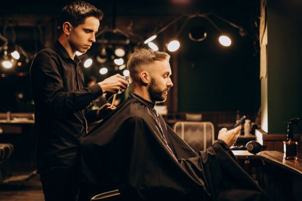

Sobre la barberia Alura
Ubicada en el corazón de la ciudad, la Barberia Alura trae para el mercado lo que hay de mejor para su cabello y barba. Fundada en 2020, la Barberia Alura ya es destaque en la ciudad y conquista nuevos clientes
Nuestra misión es: "Proporcionar autoestima y calidad de vida a nuestros clientes".
Ofrecemos profesionales experimentados que estan constantemente observando los cambios y movimientos en el mundo de la moda, para así ofrecer a nuestros clientes las ultimas tendencias. El atendimiento posee un padrín de excelencia y agilidad, garantizando calidad y satisfacción de nuestros clientes
Caracteristicas de la Barberia Alura

- Atencion personalizada a los clientes
- Espacio diferenciado
- Localización
- Profesionales calificados
- Puntualidad
- Limpieza